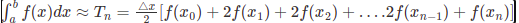

Let f(x) be a continuous function on the interval [a, b]. Now divide the intervals [a, b] into n equal subintervals with each of width,
Δx = (b-a)/n, Such that a = x0 < x1< x2< x3<…..< xn = b
Then the Trapezoidal Rule formula for area approximating the definite integral
b∫a f(x)dx
is given by:
b∫a f(x)dx ≈
